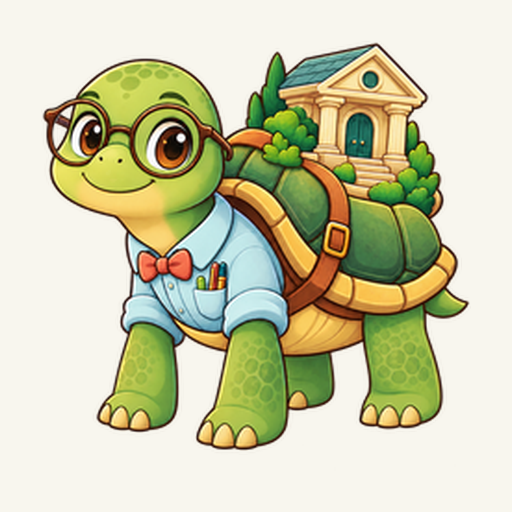

Your finance, on the phone
Sign in with the Google account whose Drive holds the copy your PC writes.
Nothing is sent anywhere but your Google Drive, and the copy opens only with your passphrase.
Unlock
The passphrase you set on the PC under Settings → Phone.